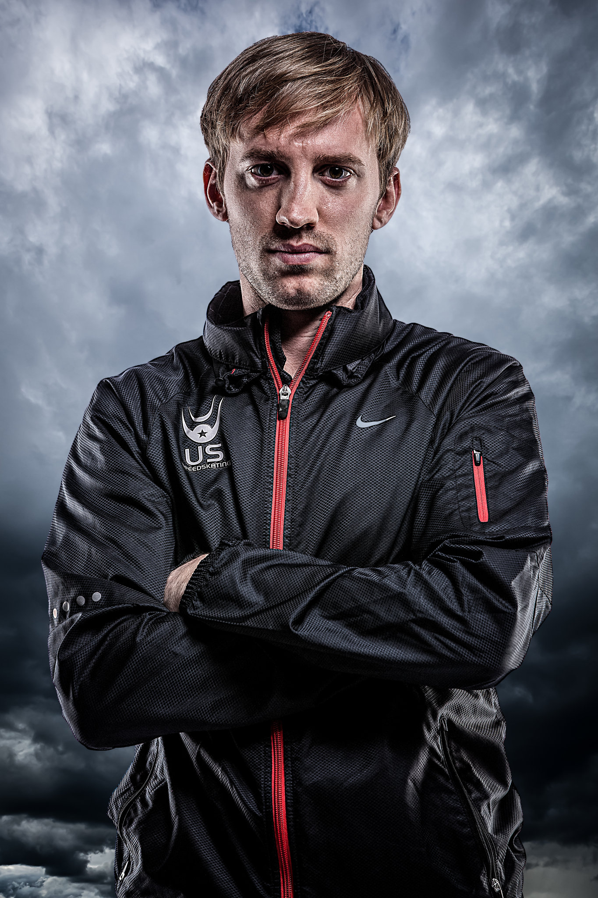

row 1
row2
row 1
row2

Chris is a Short Track Speedskater for the US National Team. He has been on the National Teams for the following years:
"Follow this link to find More 'Awesome' Images of Chris" link

He competed in 4 total events over the course of the winter games.
Chris and the other men on the relay had a huge post win celebration! His teammates pictured (from left to right) are as follows:
This was a moment captured in time of a very patriotic Team USA. Their were several men and women that Team USA sent to Sochi to compete in Short Track:
Chris and I have been pals since 2007 and we are roommates.The two handsome dudes pictured above are: